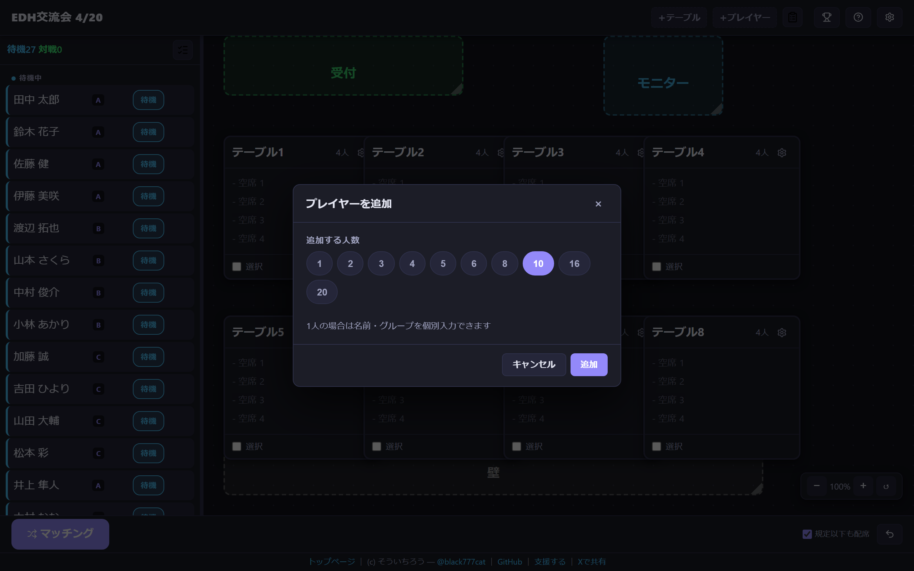
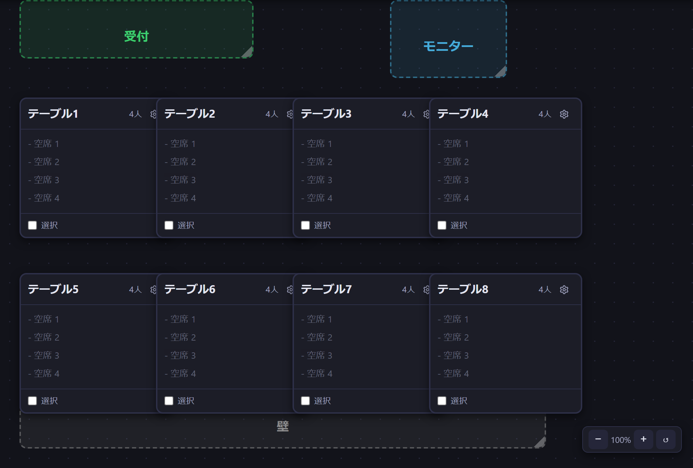
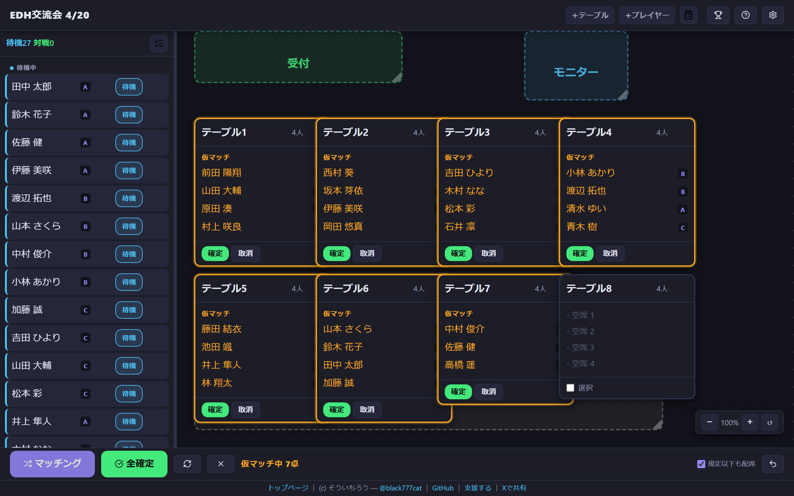
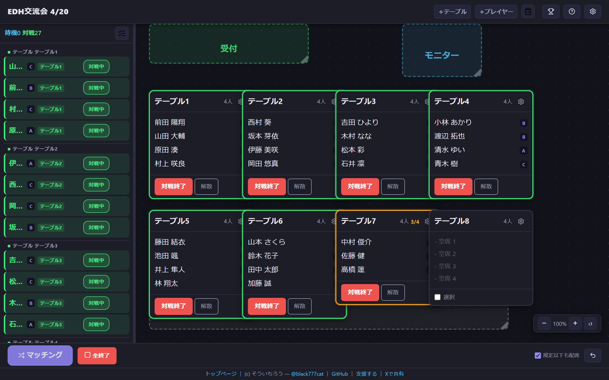
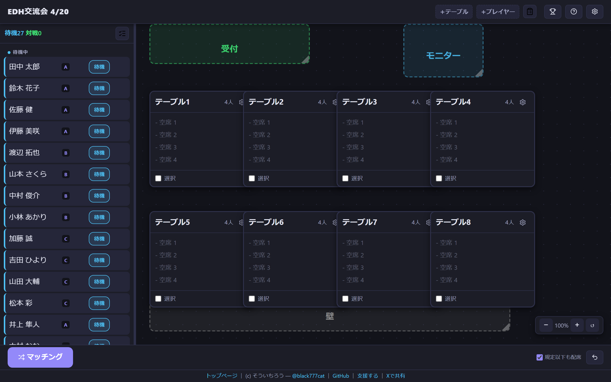
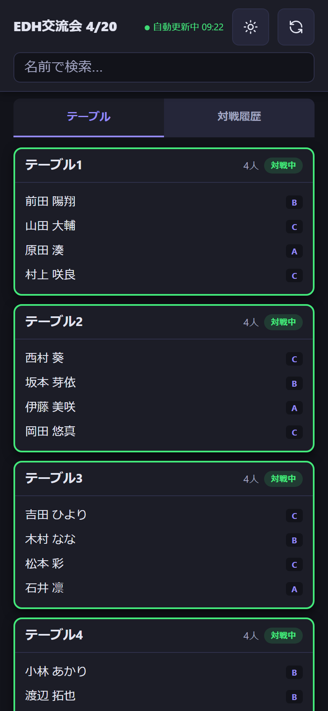

カードゲームの対戦会や交流会――EDH（マジック：ザ・ギャザリングの多人数カジュアル形式）やポケカのフリー対戦、ボードゲーム会の卓分けなど――を運営したことがある方なら、こんな経験はありませんか？
私自身、EDH交流会の主催や参加を通じて、この「手動マッチングのつらさ」を何度も感じてきました。組み合わせ作業に追われて運営者がゲームを楽しめない。結果を伝えるのにも時間がかかる。
マッチングの自動化と、結果のリアルタイム共有。 この2つを同時に解決するツールを作りました。
ブラウザで開くだけ。インストール不要。無料。
スマホ1台で管理も完結します。
マッチングボタンを押すだけで、過去の対戦履歴を考慮した組み合わせが自動で生成されます。「あの人とはさっき当たったから避けて……」を手作業でやる必要はもうありません。同じチームやグループのメンバー同士を避けることもできるので、「内輪で固まってしまう」問題も解消できます。
仕組みとしては、対戦済みペアや同グループペアに重みをつけて、偏りが最小になる組み合わせを探索しています。20人以下では最適な配席を探し、それ以上では高速な方式に自動で切り替わるので、人数が増えても待たされることはありません。
イベントを共有すると、参加者は自分のスマホで座席・対戦相手をリアルタイムに確認できます。参加コードを入力するか、QRコードを読み取るだけ。マッチングが確定した瞬間に参加者のスマホにも反映されるので、もうホワイトボードの前に行列ができることはありません。
参加者のスマホでは、名前で検索して自分の座席と対戦相手を確認できるほか、全テーブルの一覧や対戦履歴も見られます。点数記録を使っていれば順位表もリアルタイムで更新されます。アプリのインストールもアカウント登録も不要で、ブラウザで開くだけです。
ブラウザでURLを開くだけで使えます。アカウント登録も不要。iPhoneでもAndroidでもPCでも同じように動きます。
費用はかかりません。データはお使いのブラウザに自動保存されるので、うっかりページを閉じてもイベント中のデータが消えることはありません。イベントを共有している場合はクラウドにも保存されます。
トップページの「イベントを作成」ボタンを押すと、管理画面が開きます。ヘッダーの歯車アイコン（設定）からイベント名を入力しておくと、共有したときに参加者の画面にも表示されます。
ヘッダーの「＋プレイヤー」ボタンからプレイヤーを追加。人数を選んで名前を入力するだけ。Excelの名簿がある場合は、「Excelから一括入力」ボタンから名前の列をコピーしてそのまま貼り付けるだけで一括登録できます。 グループやブラケットの列があれば一緒にインポートされます。
「＋テーブル」ボタンからテーブルを追加。1卓あたりの人数は2人から8人まで自由に設定できます。EDHなら4人卓、ポケカやTCGの1対1なら2人卓、ボードゲーム会なら卓ごとに人数を変えることもできます。テーブルもExcelから一括入力できます。

スマホではカード型の表示に自動で切り替わるので、片手でも操作できます。PCではテーブルをドラッグして配置できるので、会場のレイアウトを画面上に再現することもできます。

画面下の「マッチング」ボタンを押すと、各テーブルに仮の組み合わせが表示されます。
このとき、過去に対戦した相手や同じグループの人はできるだけ避けて組み合わせてくれます。
仮の組み合わせを見て、問題なければ「全確定」で一括確定。テーブルごとに個別に確定・取消もできるので、一部だけ入れ替えたい場合も柔軟に対応できます。気に入らなければ「再生成」で別のパターンを試せます。

対戦が終わったら「全終了」で一括終了。プレイヤーが待機状態に戻り、次のマッチングに進めます。

これだけです。 STEP 2〜3を繰り返すだけで、対戦会が回ります。

参加者に組み合わせをスマホで確認してもらいたい場合は、設定画面の「イベント共有」からONにしてください。最初のマッチングの前でも途中からでも、いつでもONにできます。
これだけで、参加者のスマホにテーブル一覧・座席・対戦相手がリアルタイムで表示されます。管理者がマッチングを確定するたびに、参加者の画面も自動で更新されます。参加者側にアプリのインストールやアカウント登録は一切不要です。
事前にLINEグループやX（Twitter）で参加コードを共有しておけば、当日の案内がスムーズです。PCの管理画面をモニターに映せば、掲示板代わりにもなります。

参加者の画面には「テーブル」「対戦履歴」のタブがあり、テーブル一覧では対戦中のテーブルが緑枠で強調表示されます。名前で検索すると自分のテーブルがハイライトされ、座席と対戦相手がひと目でわかります。
当日の前に、まずは触ってみてください。
管理画面のヘッダーにある歯車アイコン（設定）から「サンプルデータで試す」を使うと、プレイヤー27人＋テーブル8卓がワンタッチで追加されます。マッチング→確定→終了の流れを一通り体験しておけば、当日も安心です。
ボタンひとつで5卓の組み合わせが一瞬で生成されます。ホワイトボードに書いて、参加者が確認して、席に着くまで10分近くかかっていたラウンド間の転換が、マッチング→確定→スマホに即反映で2分に短縮。4ラウンド回す会なら合計30分以上浮くので、その分もう1ゲーム遊べます。
間違えて「全終了」を押しても「元に戻す」で即座に復旧できるので、バタバタする当日でも安心です。
1対1のフリー対戦でも、人数が10人を超えると「誰と誰が対戦済みか」の管理が大変になります。2人卓を並べておけば、ボタンひとつで対戦相手を自動配分。過去の対戦履歴を考慮してくれるので、同じ相手との重複を気にする必要がなくなります。
常連同士がいつも同じ卓に固まりがちな問題は、グループ機能で解決できます。身内同士に同じグループ名をつけておくだけで、自動的に別々の卓に振り分けてくれます。5〜10人の少人数でも十分使えますし、卓ごとに人数が違っても問題ありません。
知っておくと便利なTipsをまとめました。
「元に戻す」ボタン（またはCtrl+Z）で直前の操作を元に戻せます。最大30ステップ前まで遡れます。ブラウザを閉じてしまっても、データは自動保存されているので開き直せば復旧します。テーブルごとの「解散」ボタンで、そのラウンドの対戦履歴ごと取り消すこともできます。
途中参加はプレイヤーを追加するだけ。途中退出は「除外」にすれば次のマッチングから外れます。戻ってきたら「待機」に戻すだけです。全体を組み直す必要はありません。
テーブルごとに2〜8人まで個別に設定できます。「A卓は4人、B卓は3人」のような混在も問題ありません。端数が出て規定人数に満たない場合は「規定以下も配席」オプションで対応できます。設定で「少人数卓の連続を避ける」をONにしておけば、前回少人数卓だった人が続けて少人数卓になりにくくなります。
グループ機能で同じグループのメンバーを別々の卓に散らせます。完全にカテゴリを分離したい場合はブラケット機能を使うと、「カジュアル」「ガチ」のようにレベル分けして、同じレベル内でのみマッチングを組めます。
設定で点数記録をONにすると、対戦ごとにスコアを入力できます。累計点で順位表も出せるので、交流会の最後に「今日の1位は○○さんでした！」くらいのノリで使えます。さらに「マッチングに点数を反映する」をONにすると、累計点数が近い人同士を同じ卓に組みやすくなります。
はい、ブラウザに自動保存されるのでページを閉じてもデータは残ります。次の週にそのまま開けば、前回の対戦履歴を引き継げます。イベント共有中のクラウドデータは14日以上操作がないと自動削除されますが、ブラウザ側のデータはそのまま残ります。シークレットモードではブラウザを閉じるとデータが消えるのでご注意ください。
正直に書いておきます。
このツールで実現したいのは、交流の質を上げることです。
マッチングを自動化すれば、もっといろんな人と対戦できる。運営者は作業から解放されて、自分もイベントを楽しめる。参加者は自分のスマホで次の対戦相手を確認できるから、スムーズに次の卓に向かえる。
参加者全員が「今日はいろんな人と遊べて楽しかった」と思って帰れる。そんなイベントを増やすお手伝いができれば嬉しいです。
「ここが使いにくい」「こういう機能がほしい」「こんな場面で使ってみた」――どんな声でも、いただければ改善に活かしていきます。
次のイベントで、ぜひ試してみてください。